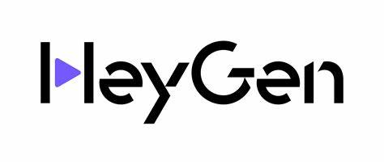

How to Create an Avatar in HeyGen
By Ross Hayduk
Step 1: Open HeyGen
Go to HeyGen.com
and log in with your account. If you don’t have one, sign up for free to get started.
Note: Free accounts have limited capabilities.

Step 2: Navigate to Avatar Creation
Once logged in, click on the “Avatars” tab in the main menu. This will take you to the avatar creation dashboard.
Observe how many different types of avatars are available, from UGC (User Generated Content) to Pixar Studios-style avatars.

Step 3: Choose Your Avatar Type
You can select from stock avatars or create a custom avatar. Select an avatar from “Public Avatars.”
Custom avatars may incur an additional subscription fee.

Step 4: Customize Your Avatar
Adjust voice, language, and gestures. HeyGen also lets you add lip-syncing to your scripts.
Preview your avatar to make sure it matches your needs.
Ensure the voice matches the avatar to avoid the "uncanny valley" effect.

Step 5: Generate
Click “Generate” to produce your avatar. You can now use it in HeyGen video projects or export it for use in other platforms.
Ensure you have saved your avatar correctly.

Now, Review the Five Steps
- Open HeyGen.
- Go to “Avatars”.
- Choose an avatar.
- Customize voice and gestures.
- Click Generate.
